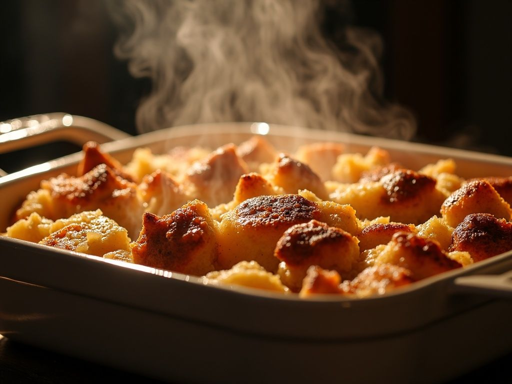

Bread Pudding Recipe

Description
This bread pudding is one of my favorites. Try out this quick, easy recipe!
For the recipe I don't use raisins, but feel free to add them if you prefer.
Ingredients
- 3 cups bread cubes
- 4 cups scalded milk
- 3/4 cup white sugar
- 1 tablespoon butter
- 1/2 teaspoon salt
- 4 eggs, lightly beaten
- 1 teaspoon vanilla extract
- 1 cup white sugar
- 1/2 cup butter
- 1/2 cup heavy cream
- 1 teaspoon vanilla extract
Steps
-
Preheat oven to 350 degrees F(175 degrees C).
-
Butter an 8 x 8 inch glass baking dish. Soak bread in hot milk for
five minutes. Stir in 3/4 cup sugar, 1 tablespoon butter, salt, eggs,
and 1 teaspoon vanilla. Pour into the baking dish.
-
Line a roasting pan with a damp kitchen towel. Place baking dish
on towel inside roasting pan, and place roasting pan on oven rack.
Fill roasting pan with boiling water to reach halfway up the sides
of the baking dish. Bake for 60 minutes. Cool on wire rack.
-
While the pudding cools, combine 1 cup sugar, 1/2 cup butter,
cream, and 1 teaspoon vanilla in a large saucepan. While stirring,
bring to a boil. Reduce heat to low, and stir 3 minutes more.
Spoon over warm bread pudding.
Back to Home